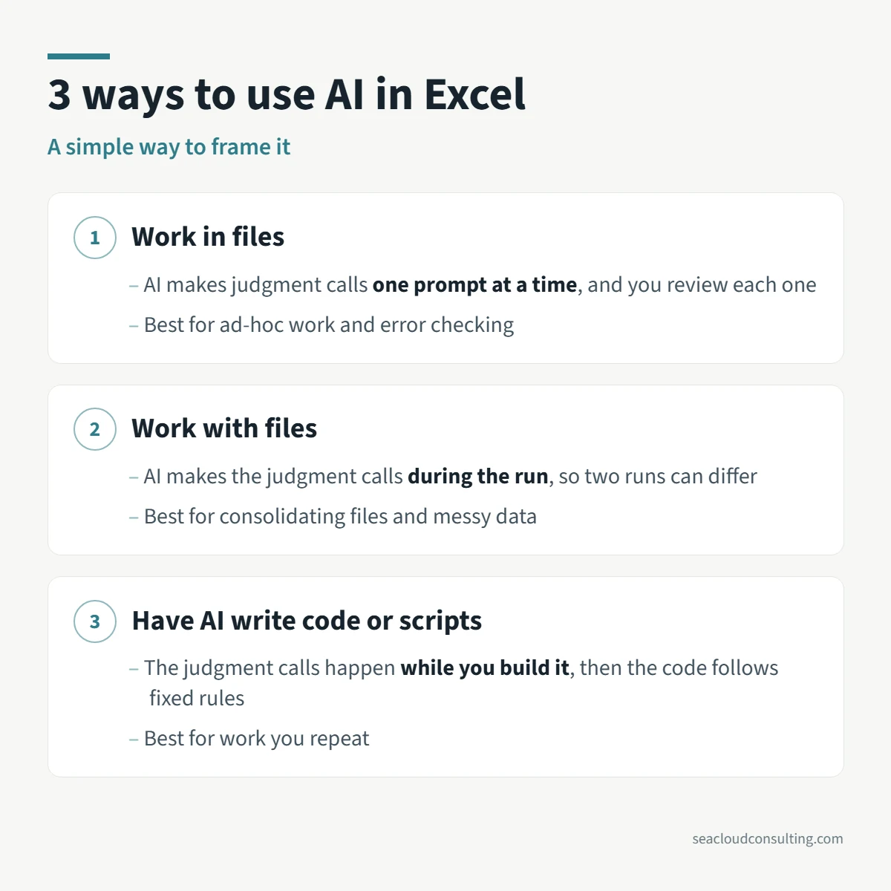

3 ways to use AI in Excel

Budgeting season is coming up for a lot of companies. If you are thinking about ways to use AI more this year in your process, below is a simple framework that may help you decide.
I’m going to assume you are working in Excel in some capacity, so the main question is how to use AI in this environment. Agents and forecasting tools with embedded AI would be a step beyond this.
There are 3 main ways you can use AI with Excel:
1. ✏️ Work in files
HOW: Accessing an add-in within Excel, then typing a prompt and watching the work get done live in the cells.
BEST FOR: Quick ad-hoc analysis, formatting and checking for errors; people who are less fluent in Excel, or people who know Excel but have pre-built prompts or skills.
LIMITATIONS: Usually involves a back and forth, which is more time-consuming.
As a side note, I personally find this method less useful for creating work, as I don’t like to type and wait. It feels unproductive. However, checking for errors in a finished analysis is a great way to use this.
2. 📁 Work with files
HOW: Using a tool like Claude or ChatGPT pointed at a folder to manipulate multiple files.
BEST FOR: Tracking changes, reconciling, summarizing and consolidating files; making sense of messy data.
LIMITATIONS: Each time you run it, you are asking AI to make decisions, so there may be variations, particularly with judgment calls and formatting.
3. 💻 Have AI write code or scripts
HOW: Having AI write a program using languages like Python, VBA, and others that can be accessed in Excel. You don’t need to be a programmer. Anybody can do this.
BEST FOR: Repeatable, rules-based workflows. You only pay the AI costs once, when you build it.
LIMITATIONS: Tends to be more complicated, multi-step and potentially prone to breaking, which can make it difficult to pass on to others.
I have built some genuinely useful workflows using #3 for my consulting business. But I think #2 has the most potential for budgeting and I want to explore how far it can go.
In my next post, I’ll share some more concrete budgeting examples.
More on AI and finance
 Don’t toss AI slop grenadesI heard this term on a podcast recently, and the meaning is clear if you have ever received half-baked AI output at work.
Don’t toss AI slop grenadesI heard this term on a podcast recently, and the meaning is clear if you have ever received half-baked AI output at work. An AI Adoption Framework for FP&A TeamsA reference guide on where AI works in FP&A today, how adoption usually progresses, and the use cases I have actually implemented. Created with AI,…
An AI Adoption Framework for FP&A TeamsA reference guide on where AI works in FP&A today, how adoption usually progresses, and the use cases I have actually implemented. Created with AI,… Testing Claude for Excel: Practical Lessons from a Lifetime Excel UserTesting Claude for Excel using real sample files. Lessons on checking AI output, cleaning data, and using AI to improve Excel workflows.
Testing Claude for Excel: Practical Lessons from a Lifetime Excel UserTesting Claude for Excel using real sample files. Lessons on checking AI output, cleaning data, and using AI to improve Excel workflows.